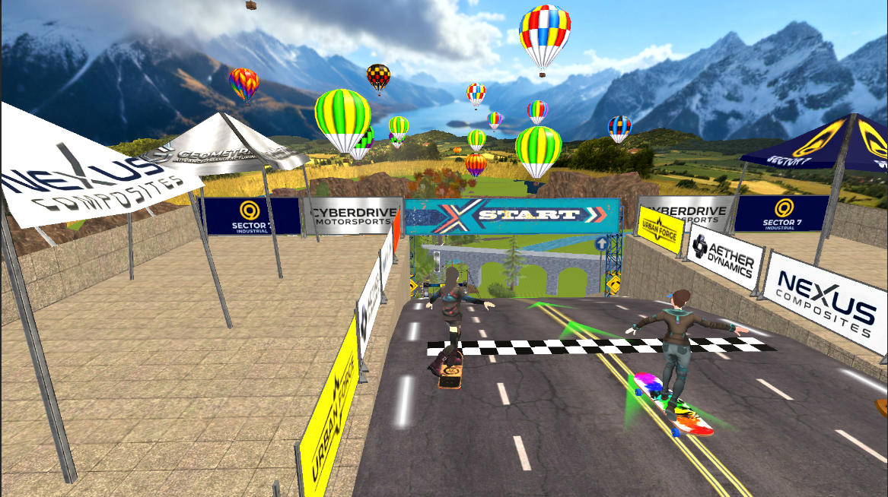

Overview
A downhill skateboard racing game I built solo as a personal project — scenic mountain roads lined with wind turbines and hot-air balloons, race events against other riders, and physics-driven board control. Personal projects like this are where I experiment with game feel: the things that make speed, balance, and cornering feel right are hard to get from a spec, so I build them myself.
